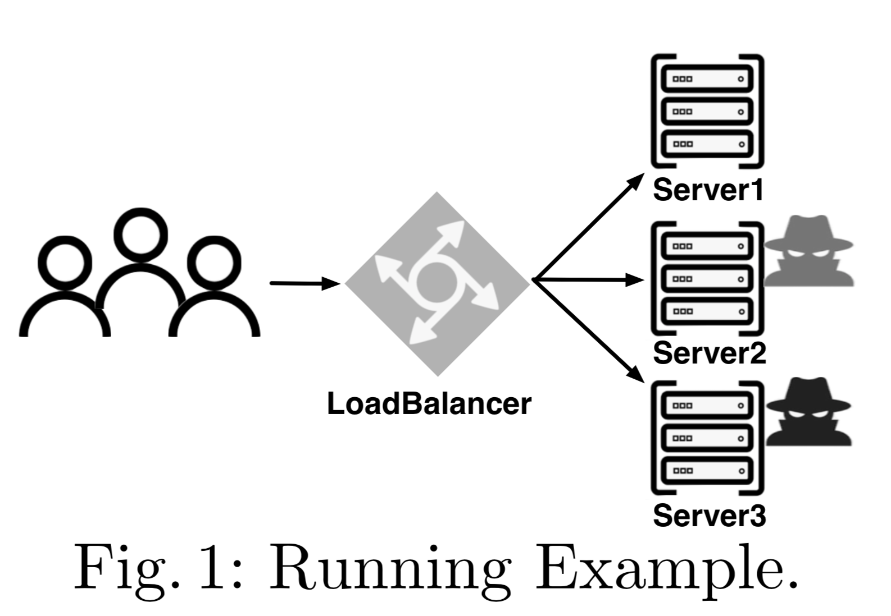

 As a running example, we adopt Znn.com, a hypothetical news website that has been used as a representative system for the application of self-adaptive systems. In a typical workflow, given a request from a client, the web server fetches appropriate content (in form of text) from its back-end database and generates a web page containing a visualization of the text. Furthermore, the system also provides an optional service with multimedia content (e.g., images, videos). This service involves additional computation on the server side, but also brings in more revenue compared to the requests with only text. With $R_M$ and $R_T$ being the revenue, $C_M$ and $C_T$ being the computation of one response to a user request with the media content and with only text content, respectively, we assume that $R_M > R_T > 0$ and $C_M > C_T > 0$. In order to support multiple servers, a \emph{LoadBalancer} is added to distribute the requests from the users to a pool of servers, as shown in Figure~\ref{runningexample}. The cost of each server is proportional to its load due to, such as potential high response time since companies such as Amazon, eBay, and Google claim that increased user perceived response time results in revenue loss~\cite{DBLP:conf/nsdi/LloydFKA13}. To be more specific, the cost per server is denoted by $(S_i - T)^2/K$ where $S_i$ is the current occupied load for server $i$, depending on the request serving mode (i.e., $S_i = D_iC_T$ in text only while $S_i = D_iC_M$ in multi-media mode where $D_i$ is the number of requests distributed to server $i$); $T$ is the threshold beyond which the response time would be affected; $K$ is a constant used to adjust the cost ratio.
The goal of the self-adaptive system is to maximize the difference between revenue and cost.
U = R_Mx_M + R_Tx_T - \sum\limits_{i=1}^3 (S_i\leq T\ ?\ 0\ :\ (S_i - T)^2/K)
where $x_M$ and $x_T$ are the numbers of responses with media and text content, respectively; the penalty is the sum of the cost for all three servers.